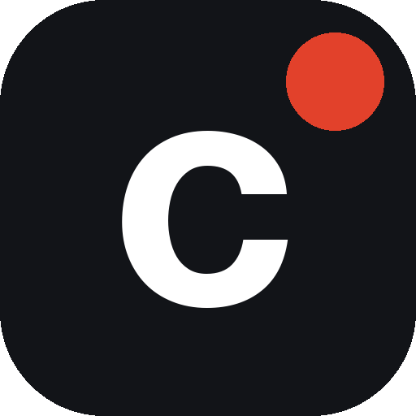

From a video link to subtitles, a thumbnail and posts for social media.
For trainers and teams who film their workshops and want to share them, with subtitles, in more than one language.
Your video stays on your Mac. Listening to the sound and choosing the frames happen on your own computer. Only the written text goes to Claude, to be tidied and translated.
On a recent Mac, an hour of recording takes about 11 minutes to write down.
python3.11 -m venv .venv && .venv/bin/pip install -r requirements.txtIt takes a few minutes. The first video then downloads the speech model once (about 1.5 GB).extension/creator-studio.mcpb and press Install.The Claude app asks where the folder is: choose the Creator Studio folder.